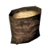
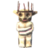

Fisk og diverse
Fisk og diverse i Valheim – 33 gjenstander med biom, funnsted, nødvendig verktøy, oppskrift og bruk.
Ingen gjenstand funnet.
 Abbor
Abbor
Best sammen med masse karbohydrater!
Slik får du den
- Fiske: Slette · Agn: Stikkende agn
Brukes til
- Ingrediens i: Fiskehatt, Mjødbase: Anti-stikk, Rå fisk
 Asksvinsal
Asksvinsal
Ryggen til asksvinet er litt puklete, så du trenger en sal hvis du vil ri på en.
Slik får du den
- Lag: Svartsmie (nivå 2) av 6 ×
 Flammetall, 20 ×
Flammetall, 20 ×  Lintråd, 4 ×
Lintråd, 4 ×  Morgensene
Morgensene

ByggmelPerfekt til brødbakst.
Slik får du den
- Bearbeid: Vindmølle av
 Bygg
Bygg
Brukes til
- Ingrediens i: Blodpudding, Brøddeig, Fiskewraps, Rå glasert sukkerbrød, Rå loxepai, Rå pikant pai, Rå vinbærpai
 Drageegg
Drageegg
Mye tyngre enn det ser ut. En svak during kan høres fra innsiden.
Slik får du den
- Plukk opp: Drakereir (egg)
 Dragetåre
Dragetåre
Den siste fryste tåren fra en drage. Den pulserer med mystisk energi.
Slik får du den
- Slippes av: Moder · Fjell · 10 ×
Brukes til
- Byggemateriale til: Håndverksbenk
 Egg
Egg
Hold det varmt for å se hva som kommer ut... men hva kom først, egentlig?
Slik får du den
- Kjøp: Haldor · 1 500 mynter · etter at Yagluth er beseiret
- Kister: Hildir-oppdrag: Forseglet tårn · 55 % sjanse
Brukes til
- Ingrediens i: Pancakes, Rå glasert sukkerbrød, Soppomelett, Speilegg
 Eldgammelt frø
Eldgammelt frø
Hvis du holder den mot øret, kan du høre en svak hvisking fra innsiden...
Slik får du den
- Slippes av: Grådvergskjempe · Svartskog · 33 % sjanse
- Knus: Grådvergreir
Brukes til
- Ingrediens i: Skogshjerte
- Påkaller bossen: Den Eldste (3 ×)
 Frisørsett
Frisørsett
Utstyr kun for de dyktigste frisører.
Slik får du den
- Kjøp: Hildir · 600 mynter
Brukes til
- Byggemateriale til: Frisørstasjon

FælingtotemHolder på Yagluths eldgamle kraft.
Slik får du den
- Slippes av: Fælingberserk · Slette · 10 % sjanse
- Kister: Stonehenge · 8,1 % sjanse
- Plukk opp: Steintårn (Fjell), Fuling-landsby
Brukes til
- Påkaller bossen: Yagluth (3 ×)
 Gjedde
Gjedde
En ferskvannsfisk som trenger mye krydder.
Slik får du den
- Fiske: Eng, Svartskog, Slette · Agn: Fiskeagn
Brukes til
 Grilbegg
Grilbegg
Varmt å ta på, og fullt av protein.
Slik får du den
- Slippes av: Grilb · Askelandet · 1–2 × · 50 % sjanse
- Plukk opp: Gribbereir
Brukes til
- Ingrediens i: Rå vinbærpai
 Hildirs messingkiste
Hildirs messingkiste
Tilhører Hildir, vennligst lever tilbake om funnet.
Slik får du den
- Slippes av: Brenna · Svartskog
 Hildirs sølvkiste
Hildirs sølvkiste
Tilhører Hildir, vennligst lever tilbake om funnet.
Slik får du den
- Slippes av: Geirrhafa · Fjell
 Intricate Key
Intricate Key
If there's a key, then surely there must be a lock.
Slik får du den
- Slippes av: Hexen · Eng, Svartskog, Sump, Fjell, Slette, Tåkeheim, Askelandet, Norddjupet, Hav · 10 % sjanse
- Stek: Froststøper av
 Cast: Intricate Key
Cast: Intricate Key
 Juvelabbor
Juvelabbor
Den har sett ting... Skrekkelige ting...
Slik får du den
- Fiske: Hav · Agn: Tungt agn
Brukes til
 Klokke
Klokke
For hvem ringer klokkene?
Slik får du den
- Lag: Svartsmie av 3 ×
 Klokkeskår
Klokkeskår
Brukes til
- Påkaller bossen: Fader (3 ×)
 Kulefisk
Kulefisk
Deilig om tilberedt riktig, men smaken kan være litt skarp.
Slik får du den
- Fiske: Tåkeheim, Hav · Agn: Tåkete agn
Brukes til
 Ljåskaft
Ljåskaft
Et stødig skaft til et verktøy.
Slik får du den
- Kjøp: Sumpheksa · 200 mynter · etter at Moder er beseiret
Brukes til
- Ingrediens i: Ljå
 Loxesal
Loxesal
Bruk på en lox for å kunne ri på den.
Slik får du den
- Lag: Sløydbenk av 10 ×
 Restelær, 20 × Lintråd, 15 ×
Restelær, 20 × Lintråd, 15 ×  Svartmetall
Svartmetall
 Magmafisk
Magmafisk
Det sies at denne fisken gyter rett i flytende lava!
Slik får du den
- Fiske: Askelandet · Agn: Glovarmt agn
Brukes til
 Marulk
Marulk
Det dinglende lyset gjør det lettere å se det søte lille fjeset!
Slik får du den
- Fiske: Tåkeheim · Agn: Tåkete agn
Brukes til
- Ingrediens i: Fiskehatt, Rå fisk, Rått fiskebrød
 Moose Saddle
Moose Saddle
A moose is a noble creature, but with a saddle this fine it might just allow a rider.
Slik får du den
 Nordlaks
Nordlaks
Denne fisken liker seg best der vannet nesten fryser over.
Slik får du den
- Fiske: Norddjupet · Agn: Frossent agn
Brukes til
 Oat Flour
Oat Flour
Finely ground oats, with plenty of potential.
Slik får du den
- Bearbeid: Vindmølle av
 Oats
Oats
Brukes til
- Ingrediens i: Meat In Bread, Northern Morning Fare, Oven Pancake Batter, Pancakes, Unbaked Poteitr
 Revnet sjel
Revnet sjel
Restene etter Yagluth, en forvrengt sjel som er delt mellom denne verden og den neste.
Slik får du den
- Slippes av: Yagluth · Slette · 3 ×
Brukes til
- Byggemateriale til: Lyktemannsfontene
 Seglbryter
Seglbryter
En gjenstand brukt til å ødelegge dvergiske segl.
Slik får du den
- Lag: Galderbord av 9 ×
 Seglbryterbit
Seglbryterbit
 Storsild
Storsild
Fermentert, kommer denne fisken til å lukte verre enn sumpen den kom fra.
Slik får du den
- Fiske: Sump · Agn: Klissete agn
Brukes til
 Sumpnøkkel
Sumpnøkkel
Halvveis dekket i størknet gjørme, den lukter motbydelig.
Slik får du den
- Slippes av: Den Eldste · Svartskog
 Tetra
Tetra
Den har levd hele sitt liv i mørket, så den har ikke bruk for øyne.
Slik får du den
- Fiske: Fjell · Hildir-oppdrag: Hylende hule, Frosthule · Agn: Kaldt agn
Brukes til
 Trollfisk
Trollfisk
Denne fisken er en plageånd i strømmen.
Slik får du den
- Fiske: Svartskog · Agn: Mosete agn
Brukes til
- Ingrediens i: Fiskehatt, Mjødbase: Trollstyrke, Rå fisk
 Tryte
Tryte
En smakfull hvitfisk.
Slik får du den
- Fiske: Eng, Svartskog, Slette · Agn: Fiskeagn
Brukes til
- Ingrediens i: Fiskehatt, Mjødbase: Vananidir, Rå fisk
 Tunfisk
Tunfisk
Havets kylling...
Slik får du den
- Fiske: Hav · Agn: Tungt agn
Brukes til
 Tønnebånd
Tønnebånd
Disse båndene er helt runde, godt egnet til å binde tønner. Bare legg til ved!
Slik får du den
- Kjøp: Haldor · 100 mynter (× 3)
Brukes til
- Byggemateriale til: Tønne